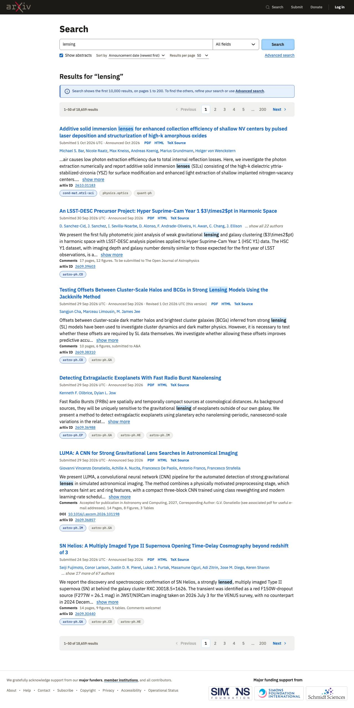
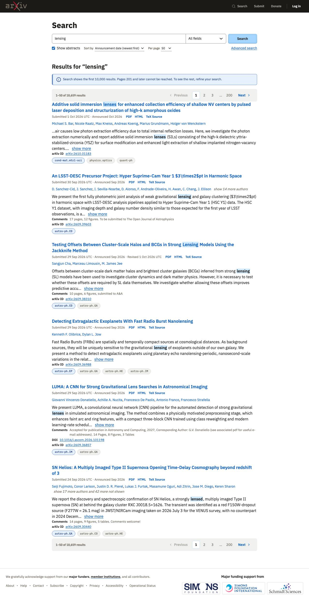
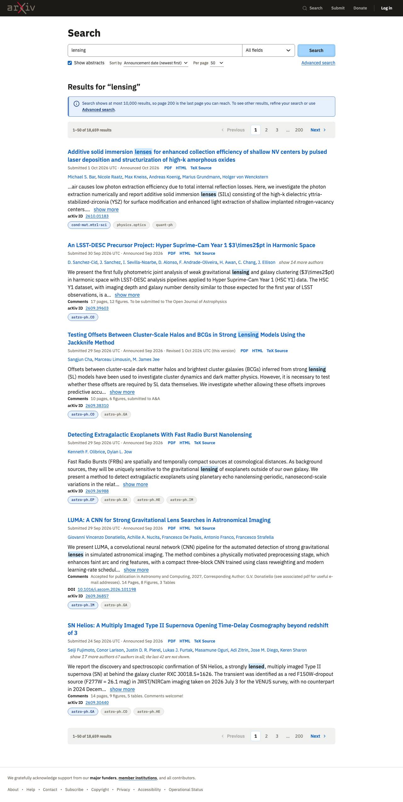

Search results
2026-10-06 · design system at commit 2b7aee0 · the spec
Result
All four builds reached search version D from the docs alone: form and results on white, the Results for heading, tinted pager bars, settings under the search row, the paper list with dates and formats on one line, category tooltips and <mark>. Every automated check passed apart from the skip link, which was a design-system bug (its focus ring used a token defined only inside the header); fixed. Each build wrote one to four CSS rules, all on tokens. Shamsi rated all four Accept with changes: the page before a search was not built (the brief did not ask for it), two builds showed only pages 1 to 3, and the 10,000-result notice wording varied and was too long or alarming.
Builds
| Build A | Build B | Build C | Build D | |
|---|---|---|---|---|
| Model | claude-opus-5-5 | claude-opus-5-5 | claude-sonnet-5-5 | claude-sonnet-5-5 |
| Pages | Results (phone, dark) |  Results (phone, dark) |  Results (phone, dark) |  Results (phone, dark) |
| Shamsi: verdict | Accept with changes | Accept with changes | Accept with changes | Accept with changes |
| Shamsi: what is off | ReadIt looks good. But only the search results page was built, not the search form before results are shown. | ReadSame as for "A", the search results page looks good but I would also like to see the search form page without results. | ReadThe pagination is showing only 1-3 before the elipsis. That seems like too few numbers, especially considering the large number of results. Other than that it looks good, but like the others it does not show me the search form before searching. | ReadThe info alert is longer in this one, and too verbose for the situation. The pagination also only shows 1-3, like for option C, and that feels like too few numbers. Other than that it looks good, though just like the others I would like to see the search form before a search is done too. |
| Claude: technical verdict | Conformant | Conformant | Conformant | Conformant |
| Claude: technical notes | ReadFour rules, tokens only: a gap between the regions of the results section, the arXiv ID and DOI in mono, and the muted count of unlisted authors. Pages 1 to 5. | ReadOne rule: space between the pager bars and the list. Pages 1 to 5. | ReadTwo rules: hide the excerpt and Show more without JavaScript, and the muted count of unlisted authors. Pages 1 to 3. | ReadOne rule: space between the pager bars and the list. Pages 1 to 3. The longest notice. |
| Cost | $2.92 · 7 min · 5 files read | $2.58 · 5 min · 5 files read | $1.08 · 2 min · 6 files read | $1.13 · 4 min · 5 files read |


Last round: Search results
 Build A: Accept with changes Build A: Accept with changes |  Build B: Accept with changes Build B: Accept with changes |  Build C: Accept with changes Build C: Accept with changes |  Build D: Accept with changes Build D: Accept with changes |
Shamsi: notes after seeing them together
All four look quite successful in terms of visual fidelity. None of them built a search form without search results. All of them included an alert, which I think is technically correct due to the directions around number of results.
Each wrote it's own alert message. D had the longest alert message, and it was too long, but it was also the most informative. Some of the other alert messages had an alarming feeling with phrases like "cannot be reached". D gave a reason.
What the builds had in common
- All four used .ds-form--compact, .ds-input-group, .ds-pagination--top and --bottom, .ds-paper-list, .ds-paper-when, .ds-data-list, .ds-tag-list with tooltips, .ds-show-more, an info alert and <mark>.
- Three of four wrote CSS for the space between the pager bars and the list: the docs ask for it but the bars do not provide it.
- Two of four showed pages 1 to 3, two showed 1 to 5: how many numbers to show is not a rule.
- Each wrote its own 10,000-result notice.
- Two marked the count of unlisted authors as muted text; the docs have no pattern for it.
- The skip link had no visible focus ring in every build (and in round 2): a design-system bug, now fixed.
- Predictions: 1 right (all on white with the heading). 2 right (all four used .ds-paper and .ds-paper-when). 3 wrong: no build put order or results per page in a filter bar.
What we changed in the design system
Not written yet.